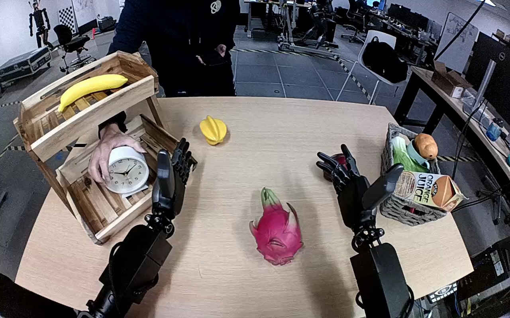

NVIDIA GR1 · 72
Video 72

Visual review action_review.json
{
"prompt_protocol": "humanoid_action_v1",
"prompt_provenance": "visually_authored_from_video_and_initial_frame",
"reviewed_contact_sheets": [
"sheet_001.jpg"
],
"inspected_frame_stride": 2,
"inspected_sampled_frame_count": 60,
"initial_scene": "Robot-facing egocentric view over a table. A white round analog clock stands in the lower tier of the wooden shelf at the robot's left. A person across the table initially has a hand on the clock. Both robot forearms and dexterous hands are visible; the left hand is near the shelf and the right is open over the table's right side.",
"observed_sequence": [
{
"start_frame": 0,
"end_frame": 8,
"action": "The person releases the clock in the lower shelf and withdraws their hand, leaving the clock upright. The robot's left hand is open nearby, without a hand-to-hand transfer.",
"confidence": "high"
},
{
"start_frame": 9,
"end_frame": 56,
"action": "The robot adjusts and withdraws the open left hand around the front of the lower shelf, then moves it toward the clock. The clock remains on the shelf; the right hand stays open without touching a task object.",
"confidence": "high"
},
{
"start_frame": 57,
"end_frame": 72,
"action": "The left hand encloses the clock case, with the thumb visible across the front and fingers around the upper/back portion, establishing a grasp while the clock is still near the shelf base.",
"confidence": "high"
},
{
"start_frame": 73,
"end_frame": 94,
"action": "The left arm lifts the clock and carries it upward and rightward out of the lower shelf opening, keeping the face roughly toward the camera. The right hand remains clear and provides no support.",
"confidence": "high"
},
{
"start_frame": 95,
"end_frame": 119,
"action": "The left arm transports the grasped clock toward the middle of the table. At the final frame the clock remains upright in the closed left hand near the dragon fruit; no hand opening or withdrawal establishes a completed release.",
"confidence": "high"
}
],
"arm_hand_roles": {
"left": "Sole manipulating hand: reaches into the lower shelf, grasps the clock's case, lifts it clear, transports it toward table center and maintains the grasp through the end.",
"right": "Open hand on the robot's right side; makes small posture adjustments but does not grasp, stabilize, receive, or place the clock.",
"coordination": "Single-hand robot manipulation. A person lets go of the clock on the shelf before the robot grasps it; this is sequential handling of the same object, not a direct handoff. There is no robot hand-to-hand transfer."
},
"anatomical_side_evidence": "The camera looks outward from between the robot's visible proximal arm bases, with both forearms extending forward from the lower foreground. The manipulating arm connects continuously to the robot-side left proximal assembly at the lower-left edge. The left hand's inward-pointing thumb appears on the right of its palm; the opposite hand's inward thumb is on its left. The egocentric attachment and mirrored thumb anatomy establish robot-relative left and right, rather than naming solely by image position.",
"terminal_state": "The lower shelf is empty. The white clock is upright near the table's middle, still enclosed by the left hand; the right hand is open and clear. No release or left-hand withdrawal occurs before frame 119.",
"uncertainties": [
"The clock base is close to the tabletop at the ending; the view does not establish whether it has made load-bearing table contact. The maintained grasp is visible, so no completed placement or release is asserted."
],
"annotation_discrepancies": [
"The original instruction names movement to the table center but does not specify the observed continued grasp at the ending. The reviewed prompt preserves transport and held state without adding a completed placement."
],
"evidence_frame_indices": [
0,
8,
18,
46,
56,
64,
70,
76,
88,
100,
112,
119
],
"selected_execution_status": "incomplete",
"video_id": "72",
"dataset": "NVIDIA_GR1_100",
"dedicated_review_agent": "review_gr1_72",
"review_source_video": "NVIDIA_GR1_100/72/original/original.mp4",
"source_frame_count": 120,
"source_fps": 20.0,
"native_detail_frames": [
0,
8,
18,
46,
56,
64,
70,
76,
88,
100,
112,
119
],
"world_model_prompt": "After the person releases the white clock on the lower shelf, the robot grasps the clock's case with its left hand and lifts it clear of the shelf. It carries the clock toward the middle of the table and holds it upright there, still grasped in the left hand. Keep the camera fixed; preserve robot geometry, physically valid joint motion, and normal gripper opening and closing.",
"original_task_instruction": "Use the left hand to pick up clock from lower level shelf on the left side of the table to center of the table.",
"selected_segment": {
"start_frame": 0,
"end_frame_exclusive": 120,
"reason": "Complete original single-task reference; no cropping or trimming requested."
},
"source_video_sha256": "f225f85f0256ec668acaa38db60a3f08bd828961bb781fbb10ce85e3f550de82",
"review_completed_at": "2026-10-13T18:29:39.960838+00:00"
}